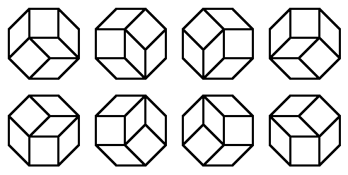
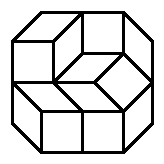

Project Euler 594
Project Euler 594
题目
Rhombus Tilings
For a polygon \(P\), let \(t(P)\) be the number of ways in which \(P\) can be tiled using rhombi and squares with edge length \(1\). Distinct rotations and reflections are counted as separate tilings.
For example, if \(O\) is a regular octagon with edge length \(1\), then \(t(O) = 8\). As it happens, all these \(8\) tilings are rotations of one another:

Let \(O_{a,b}\) be the equal-angled convex octagon whose edges alternate in length between \(a\) and \(b\).
For example, here is \(O_{2,1}\), with one of its tilings:

You are given that \(t(O_{1,1})=8\), \(t(O_{2,1})=76\) and \(t(O_{3,2})=456572\).
Find \(t(O_{4,2})\).
解决方案
Project Euler 594：Rhombus Tilings 题解
题目中的 \(O_{a,b}\) 是等角凸八边形，边长沿边界交替为 \(a,b,a,b,a,b,a,b\)。因此它是中心对称八边形。我们将参考论文中的记号\(O_{a,b}=O_{a,b,a,b},\)所以本题要求的是\(t(O_{4,2})=T_{4,2,4,2}.\)
在这类八边形铺砌中，所有小块的边只会落在 4 个方向上（相差 45°）。对每一种边方向，考虑由共享该方向边的菱形首尾相接形成的折线链，称为一条 de Bruijn 线。同一方向的 de Bruijn 线互不相交；对中心对称八边形 \(O_{a,b,c,d}\)，四个方向的线族条数分别为 \(a,b,c,d\)。
关键步骤是将其中两族 de Bruijn 线收缩为方格上的有向路径：论文将铺砌一一对应到一块 \(a\times c\) 的方格补丁上的两组有向路径（示意见论文第三页的图），并用白点记录两组路径交汇处对应的某类倾斜方块的位置。论文明确说明：白点位于两族 de Bruijn 线的交点，对应原铺砌中的倾斜方块位置。
具体而言，有 \(b\) 条从西南角 \((0,0)\) 走到东北角 \((a,c)\) 的有向路径（只能向东/向北走），称为 \(SW_1,\dots,SW_b\)；有 \(d\) 条从西北角 \((0,c)\) 走到东南角 \((a,0)\) 的有向路径（只能向东/向南走），称为 \(NW_1,\dots,NW_d\)；第 \(k\) 条 \(SW\) 路径与第 \(l\) 条 \(NW\) 路径的交汇处用一个“区分顶点” \(DV_{k,l}\) 标记，其坐标记为\(DV_{k,l}=(x_{k,l},y_{k,l}).\)
论文将所有这些 \(DV_{k,l}\) 的可行坐标集合抽象成两个数组族 \(X,Y\)：\(0\le x_{k,l}\le a, x_{k,l}\le x_{k',l'}(k\le k',l\le l'),0\le y_{k,l}\le c, y_{k,l}\le y_{k',l'}(k\ge k',l\le l').\)并约定边界扩展（把路径端点也纳入同一记号体系）：
\[ \begin{aligned} &x_{k,0}=0,y_{k,0}=0; x_{0,l}=0,y_{0,l}=c;\\ &x_{b+1,l}=a,y_{b+1,l}=0; x_{k,d+1}=a,y_{k,d+1}=c. \end{aligned} \]
这些不等式本质上是单调阵列约束：固定 \(l\) 时，\(x_{k,l}\) 随 \(k\) 不减；固定 \(k\) 时，\(x_{k,l}\) 随 \(l\) 不减；而 \(y_{k,l}\) 则对 \(k\) 方向相反（随 \(k\) 不增）、对 \(l\) 不减。这正是方格路径在平面上不能交叉所强加的偏序。
取定一组可行的 \((x,y)\in X\times Y\)。把每条 \(SW_k\) 路径按其依次经过的区分顶点切成 \(d+1\) 段：\(SW_k(1): DV_{k,0}\to DV_{k,1},\dots,SW_k(d+1):DV_{k,d}\to DV_{k,d+1}.\)对固定的段号 \(u\in\{1,\dots,d+1\}\)，所有 \(k=1,\dots,b\) 的段 \(SW_k(u)\) 组成一个局部配置集合，论文记为 \(sw(u)\)。同理，把 \(NW_l\) 按 \(k\) 切成 \(b+1\) 段得到集合 \(nw(v)\)。
当所有区分顶点坐标固定后，这些局部补丁之间互不干扰，并且可以自由组合回完整铺砌。论文以引理 1 形式给出：
\[ T_{x,y} = \prod_{u=1}^{d+1} sw(u)\cdot\prod_{v=1}^{b+1} nw(v). \]
于是基数满足 \[ |T_{x,y}| = \prod_{u=1}^{d+1}|sw(u)|\cdot\prod_{v=1}^{b+1}|nw(v)|, \]
再对所有 \((x,y)\in X\times Y\) 求和即可得到总铺砌数。
集合 \(sw(u)\) 与 \(nw(v)\) 中的路径允许相切（共享顶点/边）但不允许跨越。而经典的 Gessel–Viennot 引理计数的是顶点不相交的有向路径族。
论文采用标准平移技巧：对 \(sw(u)\) 中第 \(k\) 条段路径整体平移 \((k-1)\mathbf{u}\)，其中 \(\mathbf{u}=(1,-1)\)，从而把可相切不交叉的族双射为完全不相交的族。平移后端点坐标变为：\(x'_{k,l}=x_{k,l}+(k-1), y'_{k,l}=y_{k,l}-(k-1).\)同理，\(nw(v)\) 也可用类似平移处理（论文用 \((1,1)\)）。
在一个满足“兼容性”的平面有向无环图上，设 \(\lambda_{ij}\) 是从出发点 \(d_i\) 到到达点 \(a_j\) 的有向路径条数，则第 \(i\) 条路径必须从 \(d_i\) 到 \(a_i\)的不相交路径族数量等于行列式：\(D_n=\det(\lambda_{ij})_{1\le i,j\le n}.\)
而在方格上（只允许向东/向北或向东/向南），从点 \(D=(x_D,y_D)\) 到点 \(A=(x_A,y_A)\) 的单条有向路径数就是组合数：\(\lambda=\dbinom{(x_A-x_D)+(y_A-y_D)}{x_A-x_D}.\)（若差分为负则视为 0。）
将上一节应用到每个局部补丁：
- 对 \(sw(u)\)（固定 \(u\)，有 \(b\) 条平移后的不相交路径），以\(d_i=DV'_{i,u-1}, a_j=DV'_{j,u}\)作为端点，则 \(\lambda_{ij}\) 由上一节的组合数给出，整理得到矩阵元素：\(m_{ij}=\dbinom{x_{j,u}-x_{i,u-1}+y_{j,u}-y_{i,u-1}}{x_{j,u}-x_{i,u-1}+j-i}.\)
- 对 \(nw(v)\)（固定 \(v\)，有 \(d\) 条路径），同理得到：\(p_{ij}=\dbinom{x_{v,j}-x_{v-1,i}+y_{v-1,i}-y_{v,j}}{x_{v,j}-x_{v-1,i}+j-i}.\)
并约定组合数在非法参数时为 0。于是\(|sw(u)|=\det M^{(u)}(x,y), |nw(v)|=\det P^{(v)}(x,y),\)将分块乘积再对 \((x,y)\) 求和，就得到论文定理 1 的结果：
\[ T_{a,b,c,d} =\sum_{(x,y)\in X\times Y}\prod_{u=1}^{d+1}\det M^{(u)}(x,y)\cdot\prod_{v=1}^{b+1}\det P^{(v)}(x,y). \]
代码
1 | from typing import List |